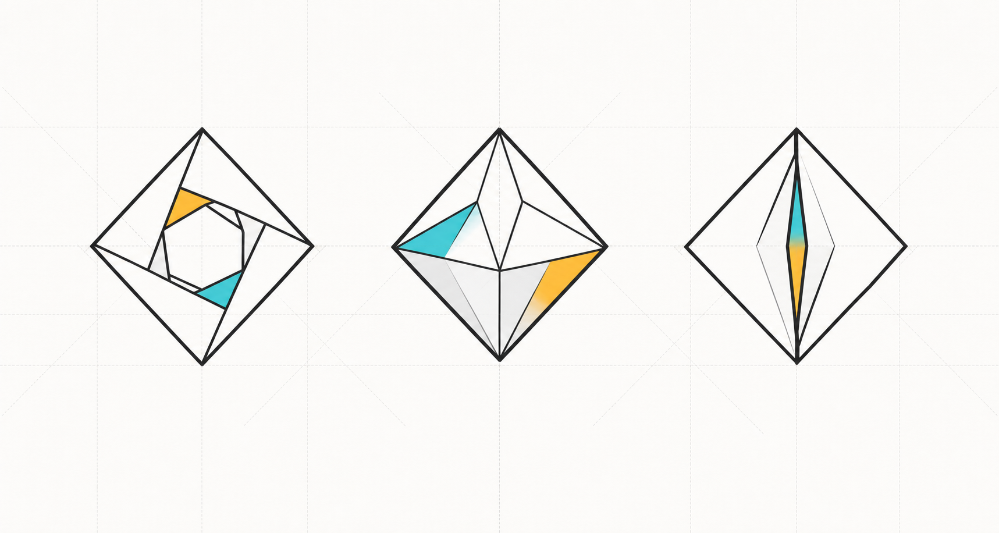
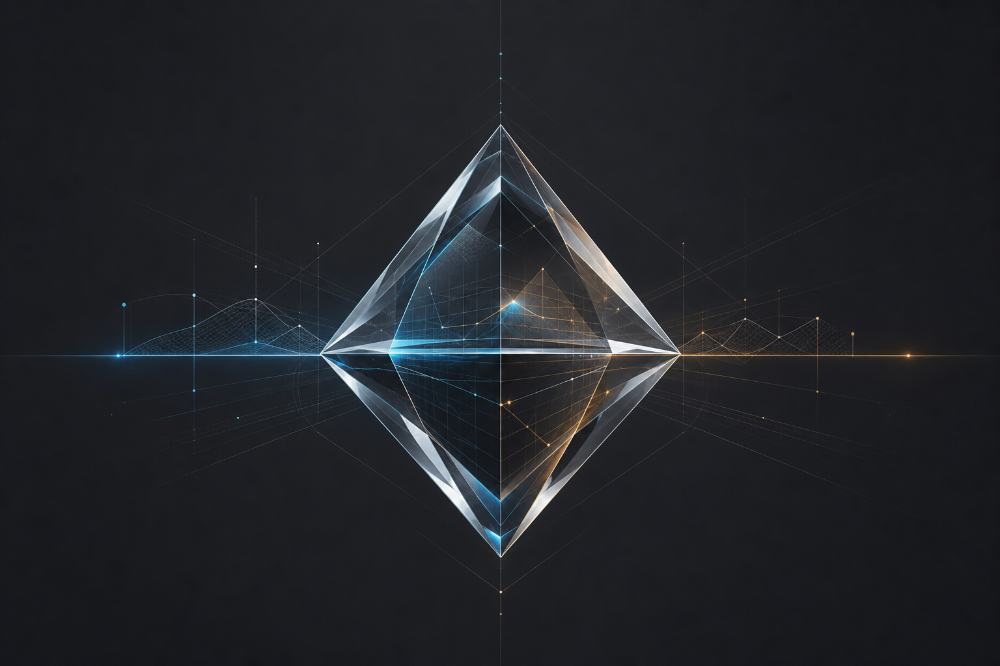

Polymarket
核心语言是世界级预测市场、概率价格、群体智慧和实时市场信号。 品牌更互联网、更交易、更开放，但也更容易被外界和投机叙事绑定。
Branding Research & Execution Plan
一个把未来事件的不确定性变成实时概率与价格的预测市场品牌方案。 核心隐喻：用钻石切面揭开隐藏概率。
01 / Research Frame
预测市场处在金融交易、信息市场、公共事件、社群判断和合规监管之间。 品牌不能只讲“预测”，更要讲清楚可信度、透明度、结算规则和风险边界。
核心语言是世界级预测市场、概率价格、群体智慧和实时市场信号。 品牌更互联网、更交易、更开放，但也更容易被外界和投机叙事绑定。
核心语言是受监管交易所和事件合约，强调 CFTC、DCM、合规、透明和金融基础设施。 品牌更制度化，也更适合参考它的信任表达。
Manifold 更像社交预测社区，PredictIt 更偏政治研究和受限实验环境。 这说明预测市场可以有多种气质：社区、研究、金融、媒体信号。
02 / Key Findings
赛道里的强者已经分别占住了“最大市场”和“受监管交易所”。 Veil 更适合成为一个冷静、锋利、透明、有研究所气质的预测市场品牌。
Veil 暗示“被遮住的东西”。它天然适合解释信息不透明、未来不确定、市场揭示概率。 中文“预测所”有研究所和交易所的双重机构感，避免直接滑向博彩语境。
Veil 在预测市场语境并非完全空白，历史上有过基于 Augur 的 Veil 项目，也存在相近命名结果。 因此建议保留 Veil，但避免使用 “Veil Markets” 作为完整定位，并尽快做商标、域名、社媒检索。
预测市场容易被误解为赌博、内幕交易或错误信息扩散。品牌文案要避免刺激性赚钱语言， 应该强调概率、价格、结算来源、透明规则和风险意识。
钻石 icon 可以避开普通金融箭头、K 线、筹码和水晶球。 它可以代表切面、折射、透明、压力成形和稀缺信号，是 Veil 最有辨识度的资产。
03 / Brand Position
Veil 不是水晶球，也不是赌场。它是一个把分散信息、判断和风险压缩为实时价格的预测市场。 价格不是确定答案，而是一种公开、可争论、可交易的概率。
04 / Narrative
Veil 的叙事应围绕“显影”而不是“预言”。世界被新闻、情绪、专家意见和噪音遮住， 预测市场让这些信号进入同一个价格机制。
未来不是一个等待宣布的答案，而是一组不断变化的概率。 Veil 存在的意义，是让人看到事件背后正在形成的市场共识。
用户不是被动读新闻，而是通过市场价格看见群体判断。 Veil 把判断、风险和信念变成可观察的价格。
不说“一夜暴富”和“稳赚”。重点讲概率、规则、结算、透明、信息质量和用户自己的判断责任。
05 / Icon System
推荐将 icon 定义为 Diamond Lens / Probability Prism。 小尺寸时保留钻石轮廓与中央 V；大尺寸时展示切面、折射和细微信号线。

Image 2 生成图：钻石 icon 三方向概念板。正式 logo 应基于这个方向继续矢量化、网格化和商标排重。
06 / Visual Language
整体气质应更像金融信息产品和研究工具，而不是博彩平台。 图形语言使用切面、透明层、概率曲线、结算时间轴和价格深度。
英文使用 Inter、Geist 或 Neue Haas Grotesk 风格；中文使用思源黑体、Noto Sans SC 或阿里巴巴普惠体； 数据数字可用 IBM Plex Mono 或 JetBrains Mono。
事件卡片必须优先展示标题、实时概率、价格、成交量、结算来源和风险提示。 视觉不要过度装饰，要让用户快速判断市场状态。
07 / Voice
Veil 的语气应该聪明、克制、清楚、有制度感。英文优先但中文要能自然落地。
08 / Execution Plan
下面是从现在到完整 Brand Book、Logo、UI 方向和产品落地的一套可执行路径。 每一步都有明确产出，避免停留在概念层。
深度 research：竞品、监管叙事、用户心理、视觉排重、域名和商标初筛。 重点验证 Veil 的命名风险和差异化空间。
品牌战略收敛：定位、目标用户、价值主张、slogan、英文/中文一句话介绍、 以及“不是什么”的品牌边界。
叙事成稿：品牌故事、官网 hero、产品介绍、投资人版本、媒体版本、 风险提示和结算规则说明语气。
Logo/icon 设计：以钻石为核心做 3 条矢量方向，完成小尺寸测试、 黑白版、深浅底、favicon、app icon 和社交头像。
UI 视觉系统：市场卡片、概率图表、Yes/No 交易控件、结算状态、风险提示、 watchlist、移动端信息密度。
Brand Book 整合：品牌故事、视觉规范、组件示例、文案规范、禁用项、 社媒和 pitch deck 样式。
09 / Generated Direction
这张 Image 2 生成图可以作为品牌 mood 的第一版：钻石棱镜、市场网格、概率光线。 正式生产时建议继续拆成可控的 SVG icon、WebGL/Canvas 动效和 UI 图形系统。

使用建议：官网首屏背景、pitch deck 封面、品牌探索板。不要直接当作最终 logo。
10 / Deliverables
如果继续推进，建议按下面清单生产完整品牌资产。
定位、品牌叙事、目标用户、竞品差异化、语气系统、中英文 tagline。
logo、diamond icon、色彩、字体、图形语言、动效原则、使用规范。
市场卡片、概率图表、交易模块、风险提示、结算模块和移动端信息结构。
Sources
本方案基于浏览器 research、竞品官方资料和公开监管/行业报道整理。